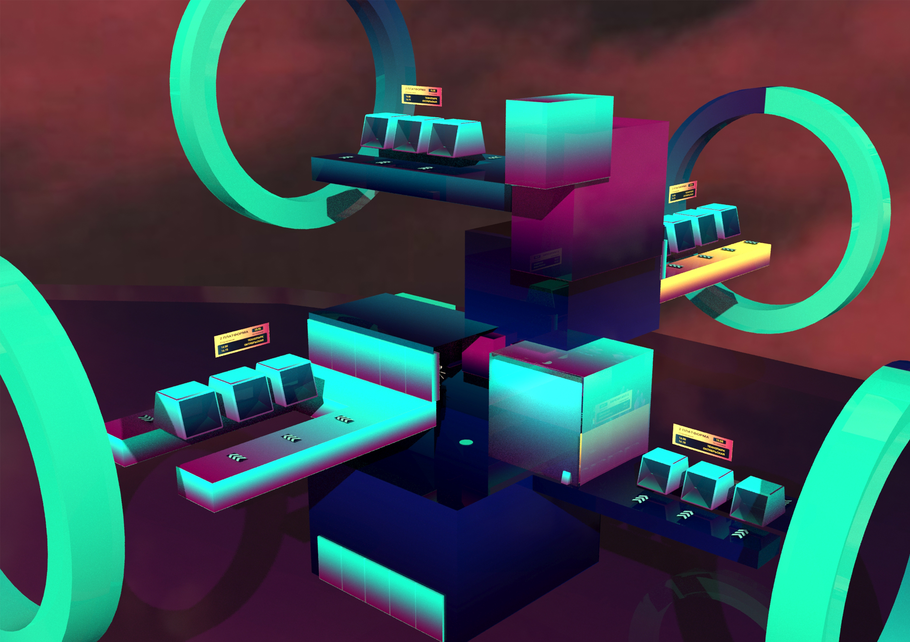
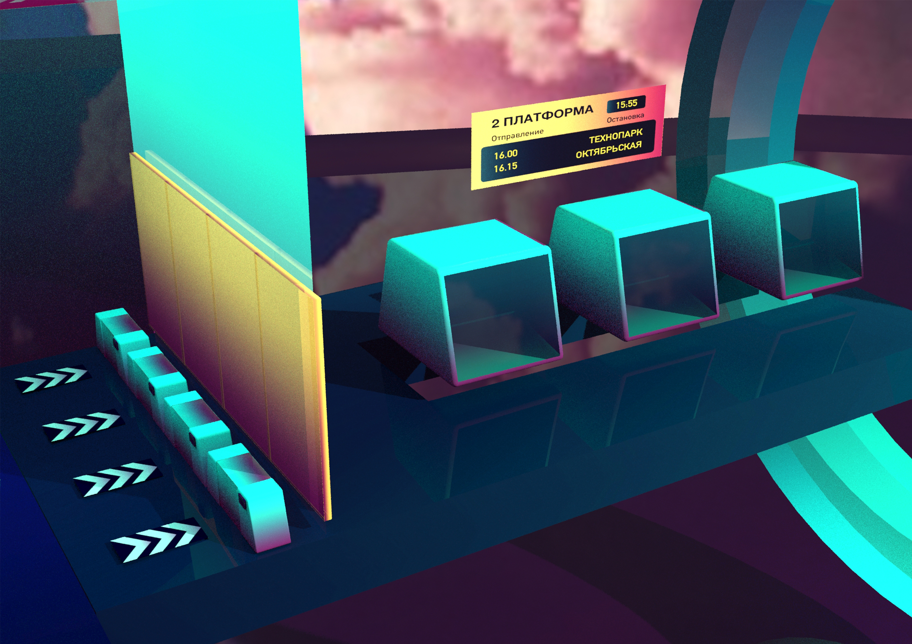

Задача
Разработать эскиз здания для компании ЛВК, выполнить экстерьер и инетерьер в программе 3D MAX, отрендерить изображение и сделать видео-облет получившегося здания.
Здание снаружи
Концепция
Концепция здания построена на метафоре транспортного узла. Каждый блок имеет свое транспортное направление. Круг, являющийся ярким паттерном, теперь представляет портал для перемещения кабинок. Здание выполнено в ярких градиентах.
Решение
Для выполнения поставленной задачи я использовала такие программы, как 3D MAX и Blender. Рендер выполнялись с помощью Vray настроек.
Особенности
В здании установлены инновационные двери, которые сами исчезают перед выходом человека и затем появляются вновь. По такой же системе работает пропускная система в турникетах и кабинках. Посередине здания установлен турболифт,который с огромной скоростью может перевозить на нужные этажи посетителей без нажимания кнопок, только с помощью штрихкода.
Интерьер